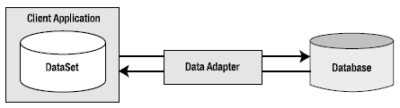

As you saw in the previous chapter, working with the connected layer allows you to interact with a database using the primary connection, command, and data reader objects. You can use this handful of classes to select, insert, update, and delete records to your heart’s content (as well as invoke stored procedures or perform other data operations [e.g., DDL to create table and DCL to grant permissions]). However, you have seen only part of the ADO.NET story. Recall that you can use the ADO.NET object model in a disconnected manner.
Using the disconnected layer, it is possible to model relational data using an in-memory object model. Far beyond simply modeling a tabular block of rows and columns, the types within System.Data allow you to represent table relationships, column constraints, primary keys, views, and other database primitives. Once you model the data, you can apply filters, submit in-memory queries, and persist (or load) your data in XML and binary formats. You can do all of this without ever making a literal connection to a DBMS (hence the term, disconnected layer) by loading data from a local XML file or manually building a DataSet in code.
You could use the disconnected types without ever connecting to a database, but you will typically still use connection and command objects. In addition, you will leverage a specific object, the data adapter (which extends the abstract DbDataAdapter class), to fetch and update data. Unlike the connected layer, data obtained with a data adapter is not processed using data reader objects. Rather, data adapter objects use DataSet objects to move data between the caller and data source. The DataSet type is a container for any number of DataTable objects, each of which contains a collection of DataRow and DataColumn objects.
The data adapter object of your data provider handles the database connection automatically. In an effort to increase scalability, data adapters keep the connection open for the shortest amount of time possible. Once the caller receives the DataSet object, the calling tier is completely disconnected from the database and left with a local copy of the remote data. The caller is free to insert, delete, or update rows from a given DataTable, but the physical database is not updated until the caller explicitly passes the DataSet to the data adapter for updating. In a nutshell, DataSets allow the clients to pretend they are always connected; however, they actually operate on an in-memory database (see Figure 22-1).
Figure 22-1 Data adapter objects move DataSets to and from the client tier
Given that the centerpiece of the disconnected layer is the DataSet class, the first task of this chapter is to learn how to manipulate a DataSet manually. Once you can do this, you will have no problem manipulating the contents of a DataSet retrieved from a data adapter object.